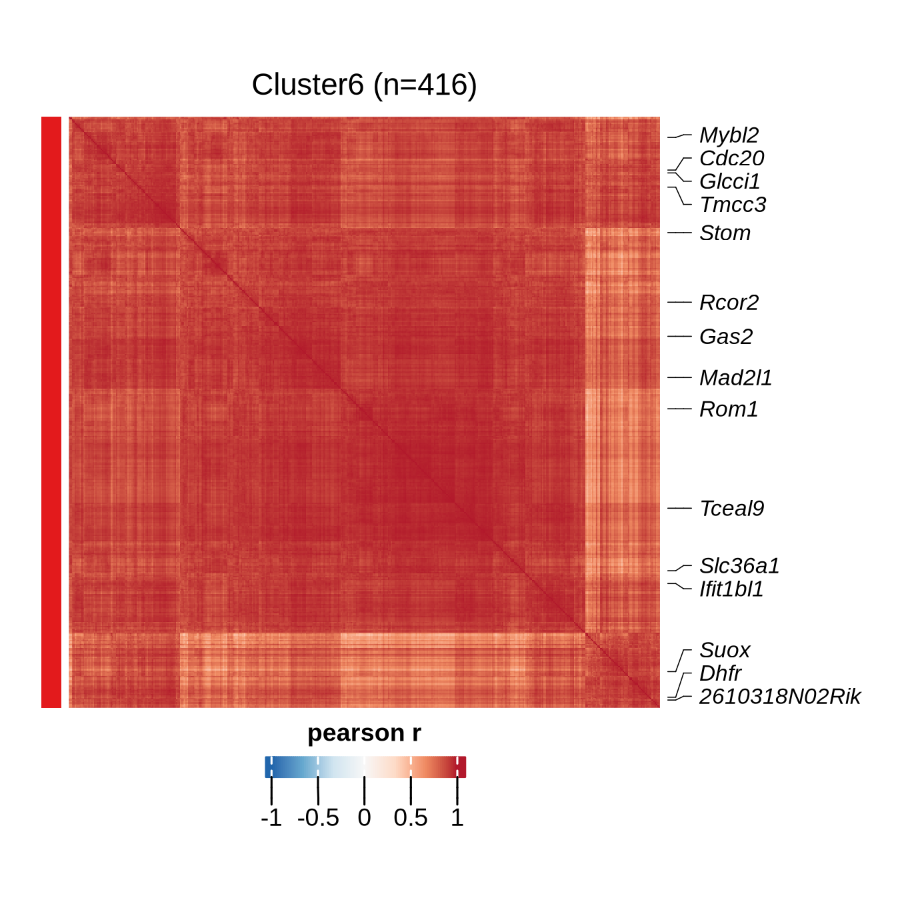

Module coherence
Temporal clustering can group features with similar average profiles, but a module should still be checked for internal coherence. The correlation helpers summarize and visualize feature-feature agreement within each module.
module_correlation_summary(obj)
module_correlation_heatmap(
obj,
clusters = "Cluster1",
max_genes = 60,
file = "module_correlation.pdf"
)
A coherent module appears as a high-correlation block. Visible sub-blocks can indicate that the module should be split by increasing k.